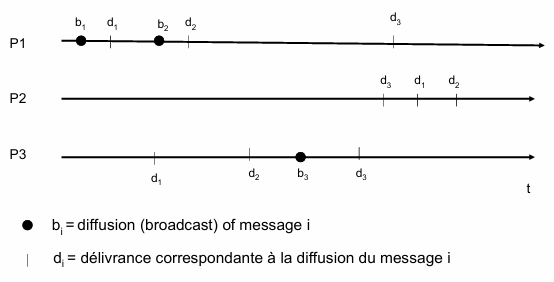
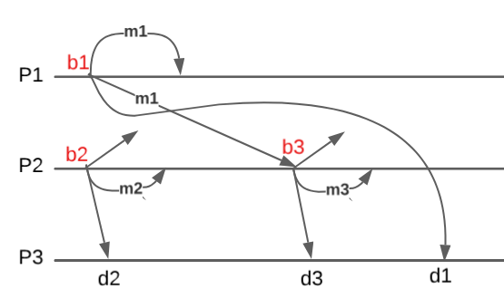
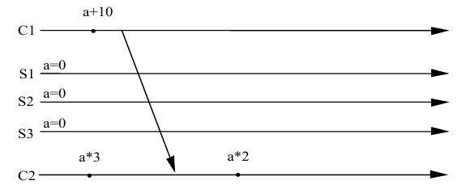
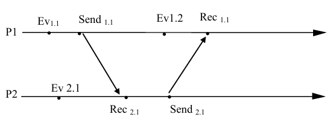
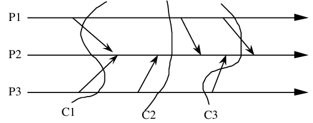
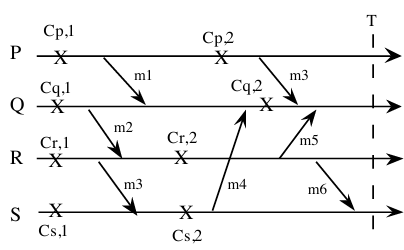
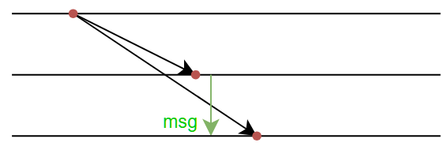
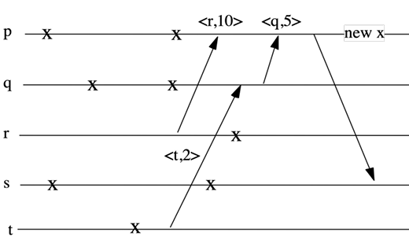

Considérez le scénario ci-dessous :

1.1. Est-ce que le scénario représente une diffusion FIFO, causal ou totalement ordonnée ?
Justifiez votre réponse par rapport à chaquun de ces types de diffusion.
FIFO? C'est une diffusion FIFO car P1 envoie m1 puis m2 (b1 → (précède) b2, et tous les d1 → d2 ()).
Causal? On remarque que :
Il faut donc que :
Total? non car sur P1 d1 → d2 → d3 et sur P2 d3 → d1 → d2.
Soit un groupe fermé composé de deux processus P1, et P2. Considérez que :
2.1. Quels sont les ordres de délivrance de messages possibles si on utilise :
- une diffusion FIFO ?
- une diffusion causale (CBCAST) ?

FIFO :
Causal : :
Des clients envoient des requêtes à 3 serveurs répliqués afin de mettre à jour des données stockées sur les serveurs.
3.1. Quel sont les avantanges et les inconvénients de la réplication des serveurs ?
Avantages :
Inconvénients :
Les serveurs gèrent des mises à jour sur une variable 'a'. Deux clients C1 et C2 diffusent à chaque fois leurs mises à jour aux trois serveurs. Soit le scénario suivant :

Les points représentent les diffusions des requêtes aux serveurs.
3.2. Quelles sont les valeurs possibles de 'a' sur les différents serveurs si les clients utilisent un CBCAST ou un ABCAST ?
Dans quels cas peut-on avoir des valeurs différentes sur les serveurs ?
CBcast (Causal Broadcast) :
Dépendances :
ABcast (Atomic Broadcast = reliable broadcast) :
Ordres possibles :
On considère un groupe de serveurs de log répliqués permettant de stocker des événements d’une application répartie composée de processus communiquant. Chaque serveur maintient un log qui contient une liste d’événements. Une insertion est toujours faite en fin de log (append). Un processus pi peut envoyer au groupe de serveurs trois types d’événements :
De plus, les processus peuvent envoyer un ordre aux serveurs pour compacter leur log. Pour assurer la cohérence des logs tous les serveurs doivent gérer les ordres de compaction dans le même ordre.
On dispose de trois primitives de diffusions permettant de faire de la diffusion fiable, un ABCAST et un CBCAST.
4.1. Quel type de diffusion est associé à l'envoi de chacun des opérations sur le serveur (justifier brièvement) ?
Pour les mises à jour du log : CBCAST (car il respecte l'ordre causal des événements et qu'on veut presque toujours respecter l'ordre casual )
Pour le compactage : ordre total
Soit la configuration suivante. Les points représentent les événements envoyés aux serveurs répliqués. Ev, Send et Rec correspondent respectivement au kième événement local, émission et réception sur Pi.

4.2. Indiquez le contenu possible des log à la fin de cette séquence en supposant qu'initialiement les log sont vides
dépendances : Ev$_{1,1}$ → Send$_{1,1}$ → Ev$_{1,2}$ → Rec$_{1,1}$ Send$_{1,1}$ → Rec$_{2,1}$ → Send$_{2,1}$ → Rec$_{1,1}$ Ev$_{2,1}$ → Rec$_{2,1}$ordres possibles (deux exemples parmi plus) :
Ev, Ev, Send, Ev, Rec, Send, Rec
Ev, Ev, Send, Rec, Send, Ev_{1,1}$
L’algorithme de diffusion fiable (reliable broadcast) vu en cours envoie N*(N-1) messages par diffusion étant N le nombre de nœuds. Nous voulons offrir un algorithme de diffusion fiable que n’envoi que N messages en absence de fautes. Pour cela, nous utiliserons un détecteur de fautes parfait P:
Un détecteur P assure les propriété de complétude forte (un processus en panne finira pour être suspecté) e la justesse forte (aucun processus correct ne sera jamais suspecté).
Processus p :
upon <crash, q>
correct_p = correct_p \ {q}
5.1. Donnez le pseudo-code du nouvel algorithme de diffusion stable en utilisant un détecteur de fautes parfait.
Processus p :
var locales :
correct_p = π : ensemble de processus
from[] = vide
upon recv<m> from q
if m not in from[q] then
from[q].add(m)
if q not in correct_p
envoyer<m> à tous les processus r ∈ correct_p \ {p}
reliable_deliver(m)
upon <crash, q>
correct_p = correct_p \ {q}
for all m in from[q] do
send<m> to all processes r ∈ correct_p \ {p}
reliable_bcast<m>
send<m> à tous les processus r ∈ correct_p \ {p}
5.2. Quel est le nombre de messages en plus envoyés si un processus p tombe en panne ?
p a envoyé x messages, avec x = (N - 1 - 1) pour chaque noeuds, donc N - 1 le font. (N-1) * x * (N-2)S'il y a k processus fautifs :
on a N-k processus qui envoient (N-k)(N-1-k)*x messages au total.
5.3. Quels sont les avantages et les inconvénients d'un tel algorithme ?
En l'absence de faute, pas de message supplémentaire (en cas de faute on retombe sur l'algo initial)
5.4. Est-il possible d'implémenter un algorithme de diffusion fiable avec un détecteur de fautes d'une autre classe ? Justifiez votre réponse.
Il faut une complétude forte nécessaire (qui détecte tojours un noeud en panne) mais une justesse forte non obligatoire (qui ne fait jamais aucune fausse suspicion).
Considérez la spécification de la diffusion fiable uniforme :
upon <crash, q>
correct_p = correct_p \ {q}
Les canaux sont fiables et les processus sont susceptibles de subir des pannes franches. Le système possède au début N processus corrects : P = {p1,p2,..pn}
6.1. Nous voulons offrir le pseudo code de l’algorithme de diffusion fiable uniforme. Est-ce qu’un processus peut délivrer un message m dès qu’il le reçoit ? Justifiez votre réponse.
Non, car quand on délivre le message , on doit être qu'au moins un correct l'a eu. Donc on va plutot délivrer le message lorsque tous les corrects ont envoyé leur ack.
6.2. Complétez le corps de la primitive Unif_reliable_broadcast (m) afin d’offrir une diffusion fiable uniforme et le code lorsqu’un processus reçoit un message (upon event recv(m, pj)) afin d’offrir une délivrance du message m selon la spécification ci-dessus décrite. Vous pouvez ajouter d’autres variables locales si vous trouvez nécessaire ainsi que d’autres fonctions et/ou événements ou même changer le code du événement <crash,q>.
processus p
var locales :
correct_p = π : ensemble de processus
...
Unif_reliable_broadcast(m)
...
upon event recv(m, p_j) do
...
Reliable_deliver(m)
upon <crash, p_j>
correct_pi = correct_pi \ {p_j}
...
We consider a set of processes communicating only by message passing (no shared memory). The communication graph is complete, and communication links are reliable. Processes can fail by crashing.
Ici, on ne tolère que les crashs (souvent liés à des erreurs utilisateur)
Recall the definition of a global state. Give the definition of a coherent global state.
Etat global cohérent : union d'états locaux dans lequel la relation "happens before" est respectée, c'est à dire qu'il n'y a pas de messages reçus mais non émis (ghost messages). Les messages en transit sont ok (envoyés mais pas reçus)
Consider the following configuration where the curves C1, C2 and C3 represent global states :

Indicate which curves represent a consistent global state.
C2 est un état global cohérent car il n'y a aucun message en transit
C1 est un état global cohérent car les messages en transit sont envoyés mais aucun n'a encore été reçu
C3 n'est pas un état global cohérent car il y a un message en transit qui a déjà été reçu (celui que P3 envoie à P2)
The following time diagram illustrates a four-process system. The “X” indicates the checkpoints.

(a) What are the processes to rollback-recovery and from where if P fails at time T? Give the orphan messages?
Si P tombe en panne à l'instant T, il revient au checkpoint Cp2 et donc le message m3 devient orphelin (car Q l'aura reçu mais P ne l'aura pas émis). Il faut donc que Q rollback aussi à Cq2 (ici, ça ne crée pas de nouvel orphelin, donc c'est bon)
(b) Same questions for S.
Si S tombe en panne à l'instant T, il revient au checkpoint Cs2 donc le message m4 devient orphelin (car Q l'aura reçu mais S ne l'aura pas émis). Il faut donc que Q rollback aussi à Cq1, ce qui implique que R doit rollback à Cr1 (sinon m2 devient orphelin), ce qui implique que S doit rollback à Cs1 (sinon m3 devient orphelin).
Au final, il faut donc rollback Q, R et S à leur checkpoint respectif.
(c) What problems can arise when resuming from a consistent global state?
Possibilité de perte de message (les messages qui ont été envoyés mais qui n'ont pas été reçus lors du rollback). Il faut donc stocker l'envoi des messages pour pouvoir les renvoyer après le rollback (ici, P devrait renvoyer les siens pour pas qu'ils soient perdus).
We want to build consistent set of checkpoints using a coordinated algorithm. The algorithm sends its messages over reliable and FIFO channels.
(a) Briefly describe a “naive” algorithm maintaining a consistent set of checkpoints without any synchronization.
Algo naïf : forcer un checkpoint après chaque envoi de message (ça force le fait d'avoir jamais de message non-émis au checkpoint, il n'y aura jamais d'orphelin)
(b) What are the main drawbacks of this algorithm?
C'est trop cher ! (ça ne peut que marcher sur un système avec un nombre de processus très faible)
Consider the following blocking coordinated algorithm for process :
Why at line 7 the resend CkptReq message ?
Le premier processus à vouloir faire un checkpoint envoie à tout le monde (sauf lui) de faire un checkpoint. Ensuite, chaque processus envoie aussi à tout le monde (sauf lui et ).
On renvoie le message à tout le monde pour exploiter les FIFO channels et leurs marqueurs. En effet, si on ne demande qu'une seule fois à chaque processus, on ne sait pas s'il y a des ghost messages ou non. En forçant à chaque processus de demander à tous les autres, on est sûr que tout le monde a bien reçu tous les messages.

We want to reduce the number of processes participating in the chekpoint by analyzing the interactions between the processes. The idea is to synchronize only the interacting processes at checkpoints.
Every message m contains a field, which is a label denoted by m. 1. Each process uses monotonically increasing labels in its outgoing messages.
We define the following functions:
last_rmsg(): return the label of the last message m that q received from p after q took its last checkpoint. return Ø if m does not exist.
first_smsg(): return the label of the first message m that q sent to process p after q took its last checkpoint. return Ø if m does not exist.
Consider the following execution, where p wants to take a new checkpoint "new x".

From p point of view, which processes could have a inconsistent checkpoint with "new c" ?
R et Q ont envoyé des messages depuis le dernier checkpoint de P, ils devront réémettre <r,10> et <q,50>.
cohort = { | last_rmsg() }
More generally, when a process p wants to take a new checkpoint Cp, which processes can possibly have a inconsistent checkpoint with Cp ?
Plus généralement, tous les prcessus qui ont émis un message à P depuis son dernier checkpoint devront réémettre ce message.
Give the condition under which a process q must participate in the checkpoint taken by p.
Chaque de la cohorte de doit prendre un checkpoint s'il n'en a pas pris un depuis le dernier checkpoint de reçu par de .
last_rmsg() > first_smsg() Ø (c'est à dire que a envoyé un message à depuis le dernier checkpoint de )
Propose a checkpoint algorithm that reduces the number of processes participating at a checkpoint.
envoie un checkpoint à tous les en leur disant quel est le dernier message qu'il a reçu de
Pseudo-code :
// On suppose qu'on est dans le processus p
Checkpoint()
for all q in cohort_p
send <CkptReq, last_rmsg_p(q)> to q
wait for a ack from each q in cohort_p
take_checkpoint()
Upon_fist_received <CkptReq, last_rmsg_q(p)> from q
if last_rmsg_q(p) > first_rmsg_p(q) != Ø then
Checkpoint()
send <CkptAck> to q
We want to provide an algorithm to rollback and recover. The goal is to force a minimal number of processes to rollback.
Informally, when a process p rollbacks, which other processes need also to rollback ?
Les processus qui ont reçu un message de p après le dernier checkpoint de p (ceux qui sont en avance sur l'état du processus qui a rollback)
We define the following function:
last_smsg(): return the label of the last message m sent by q to p after q took its last checkpoint. return Ø if m does not exist.
Give the condition under which a process q must rollback in case of p's recovery.
Si le dernier message reçu par de est plus grand que le last_smsg(), alors doit rollback.
Propose an algorithm minimizing the number rollbakcs.
Illustrate for algorithm with an example.
Pseudo-code pour :
Rollback()
for all q in π - {p} send <RollbackReq, last_smsg_p(q)> to q
wait for all acks
recover_from_last_checkpoint()
Upon_first_received <RollbackReq, last_smsg_q(p)> from q
if last_smsg_q(p) > last_rmsg_p(q) != Ø then
Rollback()
send <RollbackAck> to q